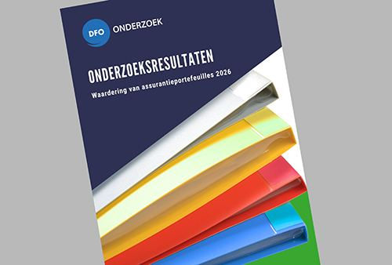

Onderzoeksrapport waardering assurantieportefeuilles | 2026
Voor het 22e jaar op rij brengt Bureau DFO haar jaarlijkse onderzoek naar de waardering van assurantieportefeuilles uit.
Het rapport geeft inzicht in de mate waarin de vraag naar te koop zijnde portefeuilles het aanbod overstijgt.
In het jaarrapport 2026 zijn de actuele waarderingen opgenomen waarbij de waarderingen zijn gesplitst naar branches. Nieuw in het rapport 2026 is:
- Ervaringen van kopers.
- Medewerkersparticipatie | Verkoop van het kantoor aan een of meerdere medewerkers.
- Casus portefeuille met bedrijfsfinancieringen.
Artikelnummer 300341. Bestellen en betalen gaat via de webshop op dfobv.nl.
Omschrijving
Nu beschikbaar!
De onderzoeksresultaten Waardering Assurantieportefeuilles 2026zijn beschikbaar. Door de jaren heen zijn grote verschillen te zien in de waardes die aan assurantieportefeuilles worden toegekend. Maar ook zijn er nieuwe aandachtsgebieden ontstaan. Bijvoorbeeld de waarde van inkomsten uit abonnementen of specifiek de portefeuille bestaande uit hypotheekklanten.
In het jaarrapport 2026 zijn de actuele waarderingen opgenomen waarbij de waarderingen zijn gesplitst naar branches. Nieuw in het rapport 2026 is:
- Ervaringen van kopers.
- Medewerkersparticipatie | Verkoop van het kantoor aan een of meerdere medewerkers.
- Casus portefeuille met bedrijfsfinancieringen.
Het uitgebreide rapport geeft een veelheid aan informatie. Deze is, waar mogelijk, weergegeven in aparte groepen. Zoals bijvoorbeeld het aantal aanwezige fte per regio in Nederland. De waarde per type verzekering wordt vermeld zoals de markt die toekent, waarbij goed te zien is hoe deze waarde zich in de afgelopen 22 jaar heeft ontwikkeld. Sinds 2004 houdt Bureau DFO jaarlijks dit onderzoek.
Het rapport geeft inzicht in de mate waarin de vraag naar te koop zijnde portefeuilles het aanbod overstijgt. Ook vind je in het rapport welke waarde de markt toekent aan abonnementen en hypotheken.
Je investering bedraagt 65 euro exclusief btw en verzendkosten.
Bestellen
Let op: het rapport wordt uitsluitend in eenpapieren variant toegezonden.
Gelet op de gevoeligheid van het onderwerp dien je apart op te geven naar welk adres het rapport gezonden kan worden.
Geef bij je bestelling bij het invulveld
Extra informatie –Order Notes
het gewenste adres op.
Wist je dat wij ook een webinar waardering van assurantieportefeuillesgeven over de huidige markt ontwikkelingen? Deelname is inclusief het rapport waardering van assurantieportefeuilles 2026.
Presentatie door:
Willem Haasnoot en Jurjen Oosterbaan Martinius
Duur 120 Minuten
klik hier voor meer informatie.